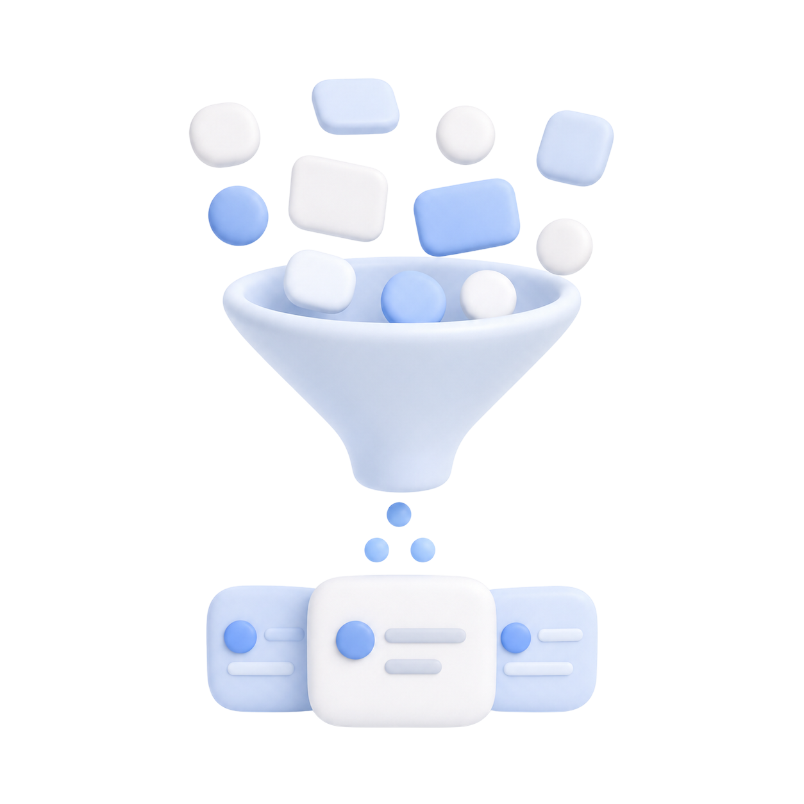

참석자 응답이 메시지와 대화에 흩어집니다.
Problem
모두의 시간을 맞추는 일, 왜 이렇게 복잡할까요?
참석자 응답은 여러 메시지에 흩어지고, 주최자는 서로 다른 가능 시간과 참석 조건을 직접 대조해야 합니다.
마케팅 팀 주간 회의
What gets messy
대화는 이어지지만, 결정에 필요한 정보는 흩어져요.
서로 다른 가능 시간을 주최자가 직접 대조합니다.
필수 참석자와 조정 가능한 사람을 똑같이 고려하기 어렵습니다.
충돌이나 변경이 생기면 같은 확인 과정을 반복합니다.
Solution
입력은 가볍게, 판단은 분명하게.

Simple Input필수 정보 중심으로 시작 부담 줄이기
기간과 소요 시간 등 추천에 필요한 조건부터 묻고, 이후 단계에서 참석 조건을 구체화합니다.

Smart Priority필수/선택 참석 조건 구분하기
많은 사람이 가능한 시간보다 꼭 필요한 사람이 함께할 수 있는 시간을 우선 고려합니다.
추천 시간과 이유를 함께 보여주기
단순 시간표가 아니라 참석 가능 인원, 충돌 여부, 추천 이유를 한눈에 비교하게 합니다.
Main User Flow
Create에서 Confirm까지, 실제 화면에서 드러나는 설계 흐름
각 단계의 사용자 행동, UX 포인트, 실제 Mingle 화면 목업을 한 흐름으로 연결했습니다.
간단하게 회의를 시작해요
회의 이름과 날짜 범위, 필요한 시간을 설정하고 복잡한 준비 없이 조율을 시작해요.
- 사용자 행동
- 회의 정보를 입력하고 생성을 진행한다.
- UX 포인트
- 필요 조건만 먼저 보여주어 시작 부담을 줄인다.
- 해결 문제
- 시작 전부터 많은 정보를 요구하는 부담을 낮춘다.
필요한 사람들의 시간을 모아요
함께할 사람을 추가하고 참석 조건을 정한 뒤, 각자의 가능한 시간을 요청해요.
- 사용자 행동
- 참석자 조건 및 응답 요청을 설정한다.
- UX 포인트
- 회의의 실제 조건을 추천 기준에 반영한다.
- 해결 문제
- 조건의 차이를 판단에 반영할 수 있게 만든다.
응답 현황을 한눈에 확인해요
누가 답했는지, 누구의 응답이 남았는지 한곳에서 확인할 수 있어요.
- 사용자 행동
- 응답과 미응답 상태를 확인한다.
- UX 포인트
- 진행 상황을 명확히 보여준다.
- 해결 문제
- 반복 확인과 관리 부담을 줄인다.
결정하기 좋은 시간을 먼저 보여줘요
가능 시간과 필수 참석 조건을 고려해, 회의하기 좋은 시간 후보를 확인해요.
- 사용자 행동
- 추천 시간별 조건과 이유를 비교한다.
- UX 포인트
- 결정에 필요한 정보를 우선 제공한다.
- 해결 문제
- 후보를 직접 대조하는 부담을 줄인다.
선택한 시간으로 일정을 확정해요
추천된 시간 중 하나를 선택하면 회의 일정이 명확하게 정리돼요.
- 사용자 행동
- 시간을 선택하고 확정 결과를 확인한다.
- UX 포인트
- 완료 상태를 분명히 전달한다.
- 해결 문제
- 조율 이후 행동이 모호한 상태를 줄인다.
Design Decisions
서비스 흐름을 화면 경험으로 바꾸기 위해 남긴 판단
검증되지 않은 수치 대신, 포트폴리오에서 설명 가능한 설계 의도와 화면 적용 방식을 중심으로 정리했습니다.
일정을 정하는 데 꼭 필요한 정보부터 묻도록 했어요.
많은 사람이 가능한 시간보다 꼭 필요한 사람이 함께할 수 있는 시간을 먼저 고려했어요.
응답을 기다리는 동안 무엇이 남았는지 명확하게 보여주도록 했어요.
시간만 제안하지 않고 선택에 필요한 이유와 참석 조건을 함께 보여주도록 했어요.
확정 이후 변수가 생길 때 다시 조율할 수 있는 흐름도 설계했어요.